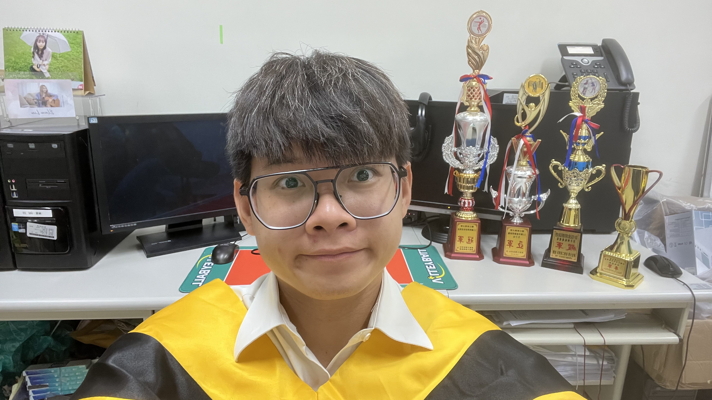

圖1:
研究室的最後一天（2023年7月10日）
股神巴菲特(Warren
Buffet)曾說過：「做你沒做過的事叫成長，做你不願意做的事叫改變，做你不敢做的事叫突破。」這句話曾經讓我在高中學測的作文中成功引用並獲得A+成績，也因如此讓我的國文的級分數從均標直接進入下一個層級，從那次之後這句名言就深深地烙印在我心中成為我的信念，不斷成長、改變和突破走到今天。
作者序
我是呂一昕，畢業於國立東華大學 應用數學系
碩士班和統計科學組學士班，致力於資料視覺化的研究和應用，對於跨領域的結合有著滿腔的熱血，造就了我的碩士論文「爵士音樂家的資料視覺化」。除了作為主要分析和呈現工具的R語言之外，最熱門的Python、資料庫管理的PostgreSQL和LaTex也是我最常使用的工具。此外，我也把碩士論文的LaTex原始碼寫成範例放在GitHub提供學弟、妹做使用，目前持續更新中。
大學時期曾任國樂社團長，管理所有和音樂相關的團務，帶領社團參加全國學生音樂比賽的國樂大團合奏獲得優等第二名的佳績，隔年擔任學生指揮引領練習和音樂上的指導。研究所時期任系男子排球隊隊長，一舉奪下共計六座冠軍，畢業前在最後一次的全國大專院校數學相關科系系際盃拿下殿軍，創下隊史輝煌戰績。
成長\(_{(1)}\)
從家庭到獨立，成長階段給予的教訓
家庭在成長階段中佔絕大多數的時間，父母給予的家庭教育對我而言是最重要的，他們給我很多自由發揮的空間，除了品德和善良的心之外，就連在台灣教育中最重要的課業，父母讓我獨自尋找學習的方法，並希望我在學習中探索出最有趣的過程和其中的奧秘。起初在國中基測和高中學測的數學科，我得到了前所未有的成就感，選擇應用數學系作為志願。
經歷學測後那段自由自在的時光，同年的九月跨越中央山脈來到「後山」的國立東華大學，位於花蓮縱谷平原間、雙面環山的校園深深吸引了我，並決定在學生活中有所成就。大學新鮮人充滿著純真的拼勁，付出相當大的時間在課業的學習，無論是大考、小考還是作業都按部就班完成紮實的訓練，也順利通過自身的努力證明自己可以在大學有好成績，就當我天真的以為大學生活如此輕鬆寫意時，我開啟了新的生活。
隔年，升上二年級的我越發的迷惘，但是此時的我還不知道我將要為我的無知付出慘痛的代價。我覺得我能輕鬆的駕馭所有學科，並開始花更多心力在社團、排球隊和其他娛樂。漸漸的數學系的課程離我越來越遠，直到我發現這個生活模式是如此的荒謬，已經為時已晚，並將課業遠遠的拋在身後。曾經我以我優秀的計算能力和邏輯思維為傲，如今缺乏的課程的訓練，我早已不是當初那的滿腔熱血的數學系新鮮人了。我的父親跟我說過，如果要在這間地廣人稀、看不太出競爭的學校念得好，自律是最重要的一項能力培養，唯有自己意識到這件事情，才能有所改變。
改變\(_{(1)}\)
大學時期的轉變，越努力越幸運
改變從來不嫌晚，回顧起過去四年浪費的青春年華，雖然在國樂社擔任彈撥組長、團長和學生指揮是我最充實的一段時間，培養出我的領導能力和音樂素養，但是我應該要有身為數學系學生的自覺，必須兼顧所有我喜愛和選擇的事物，否則就必須做出一定程度上的取捨。大學五年級，已經沒有退路，我破釜沉舟必須一年內畢業，將國樂社交給更優秀的學弟、妹，卸下「學長」的重任。
然而，夢想很美好，現實很殘酷。長期沒有好好學習的我重新拾起熟悉又陌生的那些原文書，如同魚在空氣中缺乏水窒息一般的痛苦，事到如今我能做的只有加倍的努力。日常生活變的自律，我也知道按部就班就是我最強大的超能力，一科一科紮紮實實重新把散落的零件組合。就當我努力讓生活步入正軌時，一場排球比賽中拼命的救球，不慎傷到了右手手指的骨頭，必須盡快開刀。這無疑是讓我原本就辛苦的情況雪上加霜，不過我並沒有放棄。
右手打了三根鋼釘導致我無法用右手正常寫字，但小時候因好玩而練過的左手竟然神奇的派上用場，所以在這段恢復得期間除了努力地將課業顧好之外，就是利用筆記、作業和平常的日記練習把字寫清楚。一年後，憑藉我不放棄的毅力和一天天的累積，順利拿到畢業證書。
「越努力，越幸運」，同年七月受到父親友人的引薦之下，來到中央研究院的資訊所作暑期實習，在何建明老師實驗室中見到這群優秀的學生們後，使我原本還沉浸在順利畢業的成就感，轉變成毫無信心、低人一等的延畢生。不過，第一個禮拜，我馬上展現強大的運算能力和邏輯推理在短短的一周就解決了困擾他們將近一個月的程式運算維度過高的問題。後幾周，被台大的學生們請教了一個模型問題，他們給我看了一個數學式：\(\epsilon_{i}\sim
N(0,\sigma^2)\)，我發現我們平常習以為常的數學符號，像是統計分配，對他們第一次看到的學生來說是難以理解的，我也仔細地講解機率和統計的背景知識，讓他們看到我真實的實力。我很慶幸選擇數學和統計作為起始點，讓我與眾不同的同時還可以找回原本灰飛煙滅的信心。
當年九月大學畢業以後，受到指導老師何建明的青睞，邀請我來到中研院入職研究助理，做為團隊中唯一一個統計背景的夥伴。團隊中，學長給了我非常多程式語言的指導，我也很感謝他不厭其煩地讓我問問題，引領我真正進入資訊的世界裡，Python和PostgreSQL兩個有利的工具就在學長的帶領下培養起來，也明白程式語言建立在邏輯之上，只要有好的學習方式和清晰的邏輯，任何程式語言都有機會學有所成。後來在碩士時期，我也用這兩個工具完成一個研究計劃和碩士論文的資料部分。
半年左右的中研院時期，在我準備研究所考試和當兵暫時告一段落。也是在中研院做總體經濟變數的資料分析和應用時，我堅信我一定要走進研究的領域。我相信資料會說話，無論統計和什麼領域結合都有機會擦出絢麗的火花，我想知道統計研究更深一層的世界有什麼更有趣的事情等著我來探險。
突破\(_{(1)}\)
求新求變，研究所新世界的大門
中研院工作結束後到進研究所進修，經過研究所考試的失利、部隊的洗禮和補習班特殊的工作經歷，選擇回到熟悉的那片後山繼續下一個階段的旅程。因為剛好時間完美接上寒假後的二月提早入學，我辭掉補習班工作並開始收拾行李再次跨越中央山脈到國立東華大學。
回來的第一個學期，有趣的是我的一年級上學期也是下學期，也因此有機會先和指導老師面談、討論未來規劃。我記取大學時期的前車之鑑並持續挑戰自我，再一次擁有一年級新鮮人的滿腔熱血選了四堂主科，看看其他研究生都乖乖地聽從建議修三主科，我相信自己是最特別的、一定可以做到，全心全力放在研究所更為艱深的科目學習，雖然些許高估了自己，但是嚴格規定必須做完今日規劃進度才能休息的我順利通過。不過，如果再這樣做，我將會沒有太多的時間應付研究所最重要的「論文研究」，果然前人的智慧總是有跡可循的，畢竟我當時只是普通的研究所新鮮人。
成長\(_{(2)}\)
論文研究的心路歷程，大膽嘗試，小心求證
期末，我找到指導教授曹振海討論暑假的規劃，老師覺得暑假是一個很重要做研究的時間，沒有課程的壓力、沒有作為助教的耗時、更沒有系上、朋友各種雜事的干擾。早在中研院時期，我就想針對統計和音樂的跨領域結合作應用，也和老師講了這樣的想法。幸運的，老師也是斜槓音樂人，他也很多的想法和靈感，在討論之下，我們選擇音樂家或歌曲的資料視覺化當作初步的題目。
時間來到暑假，因為我是國樂出身，所以我先把音樂家的範圍鎖定在國樂。雖然國樂是我最熟悉的領域，但是蒐集他的相關資料是第一次，我發現國樂的樂曲和音樂家資料不是殘缺不全就是雜亂無章，我們考慮了可行性和複雜程度，決定暫時放下國樂這一塊，先以資料齊全的爵士音樂家下手，但是我總有一天要做出改變國樂圈的資料視覺化圖形。爵士是老師的興趣，也是我所期待的音樂領域，每週都有新的進展和發現，討論和改進的雙管齊下，暑假步入尾聲前終於做出了一個雛形。
新學期開始前，真的非常幸運待在一個爵士樂手眾多的學校，指導老師邀請音樂系教授兼爵士小號手好友的魏廣晧老師加入我們的討論並給予最專業的建議，那次的討論中，如虎添翼般地給了我們能鎖定音樂家的範圍，解決了爵士樂手過多導致圖形太過雜亂的問題。
改變\(_{(2)}\)
新的學期、新的希望、新的開始
新的學期代表新的希望、新的開始、新成員的加入，我清楚地知道身為早他們一學期進入研究室的學長必須做好的榜樣，除了要顧好課程的學習和進度外，論文的研究也不能落後。適時的給予自身一些壓力，有助於心境的成長、想法的改變和瓶頸的突破，雖然給自己名為「學長」的壓力，但是我必須謙卑地和其他人做意見和知識的交流、討論，畢竟每個學生經歷不同，思考模式和心理層面都有巨大的差異，在和他們的交流中，我意識到無論學歷、經驗、年紀都有機會提出有趣的想法和觀點，學習多傾聽他人的想法絕對是最好的選擇，我相信同一件事情一定有那個我們沒有看到的神祕角度。
這一年，「爵士音樂家的資料視覺化」作為我的研究主題，每一次的會議中都得到很多的改進與修正，一年中不斷吸收論文期刊的精華加上進一步的嘗試和驗證，得到許多意想不到的驚喜。只要是在做自己有興趣的事情時，總覺得時間不斷在加速，隨著整體架構逐漸成形，從資料到視覺化圖形，過程經過資料整理、清洗、轉換、文字處理、分析到視覺化方法和程式的編輯，每個環節都給予我極大的成就感以及鼓勵，儘管是在失敗和嘗試之間不斷折返，都還是無法熄滅我對於成果的追求，這也是做研究的必經之路。
突破\(_{(2)}\)
精準表達，以理服人，研究所的最後一哩路
網路時代的來臨，喜歡看書的人變少可能意味著寫作能力或許也隨之降低，因為閱讀是寫作的要素之一。我的研究成果達到可以寫論文的標準之後，就準備進入最後一個階段，但就如同海軍陸戰隊的「天堂路」一般考驗的我們平時的訓練以及意志力是否足夠堅定。不過，為了使我貨真價實的破繭而出變成鋼鐵之軀的獨角仙，我決定寫全英文的碩士論文，這無疑是在天堂路上澆上一層火山熔岩。
然而，碩士論文不只要對自己所寫的作品負責，還必須指導老師負責。經過和指導老師的溝通和討論，訂好論文整體的架構和章節，也承諾會在期限內完成英文的論文草稿，如果無法達成，就只能改回中文。此時，我心中浮現一段話：「你不需要變的優秀在開始，而是開始了才會變得優秀」，著名美國作家約翰(John
Maxwell)說的這句話常常在我猶豫不決、滯留不前時，給了我當頭一棒，提供我前進的超能燃料。沒有開始就不知道自己的極限在哪，帶著這樣無敵的狀態走上了最後的「熔岩天堂路」。
碩士論文是我人生的第一次，生於資訊快速流通的時代，我也很幸運的得到《How
to Write and Publish a Scientific
Paper》、《論文寫作完全求生手冊》兩個強大的工具書，讓我在寫論文的人和問題迎刃而解。轉眼間，來到了驗收的期限，將論文草稿交出去的那個瞬間，除了鬆一口氣的感覺之外，更多的還是那份對於老師評價的期待。等待老師的回復，過了幾天經過老師的細心閱讀，得到肯定的答案，雖然有部分內容的敘述還是過於口語，但是整體的完整度和通順度還是足夠清晰的，懸在半空中的那顆心終於放下，正式進入改論文的階段。
隨著時間的推移，人工智慧、ChatGPT的出現，帶來了前所未有的便利，成為這個時代人人都會的工具之一，重點其實不是工具到底有多麼強，而是使用工具的人多麼聰明、多麼會善用工具。ChatGPT加入我的工具箱後，開始討論內容章節的調整、讀者觀感的修正和文法時態的除錯，這是整篇論文中最不得馬虎的事情。每一段的內容都必須經過初步的條列概要、設定大致的內容，補足內容的敘述並驗證是否和我想表達的意思相符合，針對英文時態和詞語進行人工修改，再交給ChatGPT作文法、敘述的編修並學習他所寫出的語句，最後照自己想呈現的作品順一次。時光飛逝，重複這樣的修正後，在閱讀和ChatGPT以及自我的編修下學習很多英文敘述的方式，和指導老師的一次次討論、建議下，最後完成了我的碩士論文。
論文完成、口試也在努力的練習下順利通過，口試結束後幾周正巧遇上統計學術界一年一度的盛宴「南區統計研討會」，剛好這次的第32屆輪到我們系主辦，除了原本就有投稿要發表論文之外，還必須協助老師們作會議的籌備、擔任工作人員和頒獎手，第一次擔任頒獎手的我穿上正裝、戴上白手套加上行雲流水的頒獎動作和手勢引導，也得到老師們的稱讚，所以我心無論作什麼，有自信才會讓你看起來有模有樣。最後，為期兩天的會議也在雨天的歸途中畫下句點。
後篇
未來的無限希望，期待夢想和現實的碰撞
口試通過、順利拿到畢業證書，畢業不只是一個階段的結束，還是另一個階段的開始。畢業後，除了找工作之外，我也堅定了我想做的事情：這個世界的每個人無論年紀、專長或興趣都喜歡自己動手做研究，特別是統計的技術，小至日常開銷的圖表，大到需要花很長時間才能完成的計畫案，只要是自己有興趣的，期望更多人能著手進行。
《統計，改變了世界》這本說曾提到南丁格爾(Florence
Nightingale)的一段話：「若想瞭解上帝在想什麼，我們就必學統計學，因為統計學就是在量測他的旨意。」統計的出現，讓我們對這個世界的「隨機」和不確定性有跡可循，漸漸地我們會預測和「估計」這些未來，所以我期許可以將統計的研究推廣去世界的每個角落。
我相信我想做的事沒這麼容易，前NBA巨星韋德(Dwyane
Wade)曾在名人堂演講說過：「如果你的夢想沒被眾人嘲笑，那你的夢想肯定不夠大。」我才29歲，在離開這個世界前還有很多事情等著我來做，對於未來我總是充滿無限的想像，每當夢想和現實重合的時候，就代表又一次證明了自己。
推廣統計科學是我最終極的目標，無論當中遇到什麼困難，必須勇於面對挑戰。其中為身為排球運動員，現階段只看到在棒球上有利用依些數據和統計的方法去提升個人實力，前MLB賽揚獎投手鮑爾(Trevor
Bauer)就成功將科學帶入自己的訓練中，用自己投球的角度、轉速和球速等數據進行分析，在其中探討如何提高投球技巧，事實證明科學的方法更好的提升他的運動表現，他也被稱為「被棒球耽誤的科學家」，他的出現，讓我看向自己身處的排球中，在棒球上有很多統計的資料和運算的數據可以說明球員的狀態，但排球上就只有簡單的數據(例如：攻擊的得分率等)，這並無法說明太多的資訊，所以我想透過短期規劃中提升更多的知識，到長期的實踐，更好的將統計科學應用在運動上，以排球科學實驗室為出發點，將統計就這項能力做推廣。
回憶
那些令人難忘的時刻
其實人生中有很多我們印象深刻也不想丟棄的回憶，但是這些時刻會因為時間的變化，再也無法出現在我的眼前。